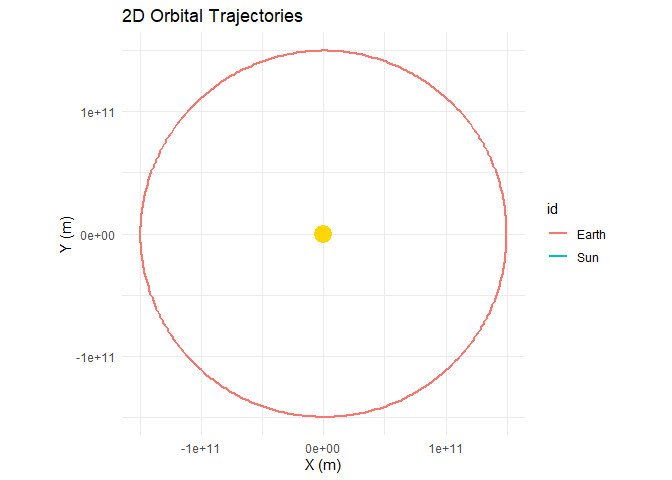

A tidy physics engine for building and visualizing orbital simulations.
Note:
orbitris a work in progress. The physics engine is functional, but the built-in plotting functions (plot_orbits()andplot_orbits_3d()) are intentionally minimal — they exist to get you a quick look at your simulation, not to produce publication-quality figures. Sincesimulate()returns a standard tidy tibble, you have the full power ofggplot2,plotly, and any other visualization library at your disposal. See Custom Visualization for examples.
orbitr is a lightweight N-body gravitational physics engine built for the R ecosystem. Simulate planetary orbits, binary star systems, or chaotic three-body problems in a few lines of pipe-friendly code. Under the hood it ships a compiled C++ acceleration engine via Rcpp and falls back gracefully to a fully vectorized pure-R implementation.
library(orbitr)
sim <- create_system() |>
add_body("Sun", mass = mass_sun) |>
add_body("Earth", mass = mass_earth, x = distance_earth_sun, vy = speed_earth) |>
add_body("Moon", mass = mass_moon,
x = distance_earth_sun + distance_earth_moon,
vy = speed_earth + speed_moon) |>
simulate(time_step = 3600, duration = 86400 * 365)
sim## # A tibble: 26,283 × 9
## id mass x y z vx vy vz time
## <chr> <dbl> <dbl> <dbl> <dbl> <dbl> <dbl> <dbl> <dbl>
## 1 Sun 1.99e30 0 0 0 0 0 0 0
## 2 Earth 5.97e24 149600000000 0 0 0 29780 0 0
## 3 Moon 7.34e22 149984400000 0 0 0 30802 0 0
## ...simulate() returns a tidy tibble — one row per body per time step — ready for dplyr, ggplot2, plotly, or any other tool in the R ecosystem.
sim |>
shift_reference_frame("Earth") |>
plot_orbits()
Installation
# install.packages("devtools")
devtools::install_github("DRosenman/orbitr")For 3D interactive plotting, you’ll also want:
install.packages("plotly")Quick Start
The workflow is simple: create a system, add bodies, simulate, and plot.
create_system() |>
add_body("Earth", mass = mass_earth) |>
add_body("Moon", mass = mass_moon, x = distance_earth_moon, vy = speed_moon) |>
simulate(time_step = 3600, duration = 86400 * 28) |>
plot_orbits()-
create_system()initializes an empty simulation with standard gravitational constant G. -
add_body()places a body with a given mass, position, and velocity. Built-in constants likemass_earthanddistance_earth_moonsave you from looking anything up. -
simulate()runs the N-body integration. The default Velocity Verlet integrator conserves energy for stable long-term orbits. -
plot_orbits()produces a quick 2D trajectory plot — or an interactive 3D plotly visualization if any body has Z-axis motion. For more control, useggplot2orplotlydirectly on the simulation tibble.
The output is a standard tidy tibble, so you can plug it straight into ggplot2, plotly, dplyr, or whatever you normally use.
Learn More
- Quick Start Guide — Full getting-started walkthrough
- Examples — Earth-Moon, Sun-Earth-Moon, Kepler-16, and more
- Physical Constants — All built-in masses, distances, and speeds
- 3D Plotting — Interactive 3D visualization with plotly
- Custom Visualization — Build your own plots with ggplot2 and plotly
- The Physics — Gravitational equations, integrators, and the C++ engine
-
Reference Frames — Shift your perspective with
shift_reference_frame() - Unstable Orbits — Why most random configurations are chaotic